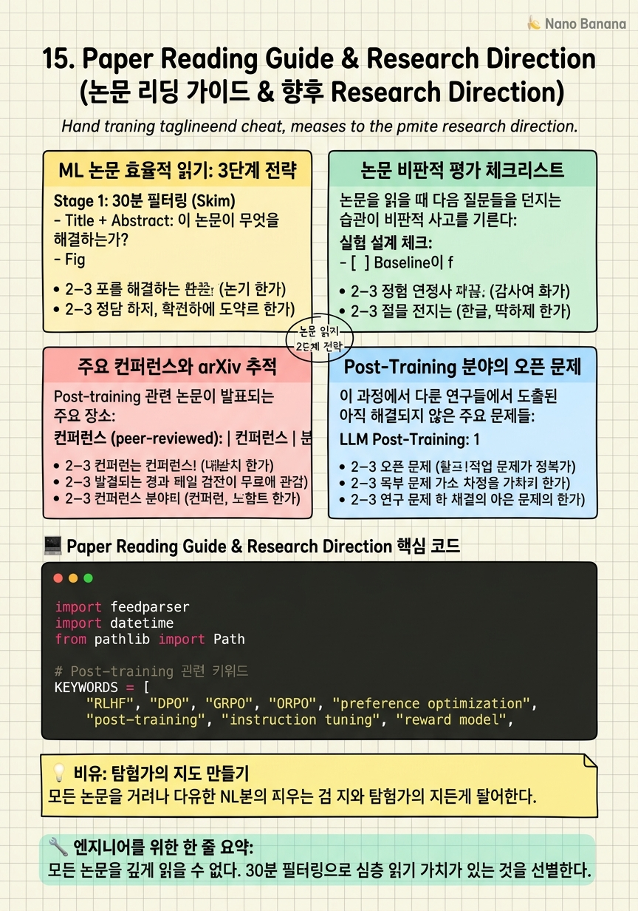

Paper Reading Guide & Research Direction

🎯 학습 목표
- ML 논문을 30분 내에 핵심만 파악하는 체계적 방법을 적용할 수 있다
- arXiv에서 관련 논문을 효율적으로 발견하는 방법을 설명할 수 있다
- Post-training 분야의 주요 오픈 문제를 제시하고 자신의 관점을 설명할 수 있다
- 논문의 클레임을 비판적으로 평가하는 체크리스트를 적용할 수 있다
- 주 1-2편의 논문 리딩 루틴을 유지하는 시스템을 설계할 수 있다
연구자의 가장 중요한 역량 중 하나는 방대한 논문 중에서 중요한 것을 빠르게 식별하고, 깊게 읽을 것을 선별하며, 비판적으로 평가하는 능력이다. ML 분야는 매주 arXiv에 수백 편의 새 논문이 올라오기 때문에, 체계 없이 읽으면 정보의 홍수에 압도된다.
이 챕터에서는 실용적인 논문 읽기 전략을 공유한다. 30분 필터링 → 1-2시간 심층 읽기 → 핵심 정리의 3단계가 핵심이다. 또한 이 과정 전체에서 다룬 post-training 분야의 오픈 문제들을 정리하고, 향후 연구 방향을 논의한다.
마지막으로, 이 강의를 마친 후 지속적으로 이 분야를 따라가기 위한 개인 루틴을 설계하는 방법을 제안한다.
핵심 내용
ML 논문 효율적 읽기: 3단계 전략
Stage 1: 30분 필터링 (Skim) - Title + Abstract: 이 논문이 무엇을 해결하는가? - Figure 1/2: 방법의 개요를 도식으로 파악 - Table 1 (결과 테이블): 어떤 벤치마크에서 얼마나 좋은가? - Conclusion: 저자가 강조하는 contribution은? - 판단: 깊게 읽을 가치가 있는가? (Yes → Stage 2, No → 제목+핵심 이슈만 메모)
Stage 2: 1-2시간 심층 읽기 (Read) - Related Work: 이 논문이 어떤 흐름 위에 있는가? - Method: 핵심 수식과 알고리즘을 이해 - Experiments: Ablation study가 핵심. 각 컴포넌트의 기여도는? - 비판적 평가 (아래 체크리스트 적용)
Stage 3: 30분 정리 (Summarize) - Problem / Key Insight / Method / Result / Limitation / My View를 1페이지로 정리 - 자신의 프로젝트와의 관련성 메모 - 인용할 만한 핵심 수치/주장 하이라이트
논문 비판적 평가 체크리스트
논문을 읽을 때 다음 질문들을 던지는 습관이 비판적 사고를 기른다:
실험 설계 체크:
- [ ] Baseline이 fair한가? (최신 방법을 동일 조건에서 비교)
- [ ] Ablation study가 있는가? 각 컴포넌트의 독립적 기여를 보여주는가?
- [ ] 다양한 데이터셋과 모델 크기에서 검증했는가?
- [ ] 오류 구간(error bar, 표준편차)이 보고되는가?
- [ ] 훈련-테스트 오염이 없는가?
클레임 체크:
- [ ] 제목과 abstract의 강한 주장이 실험 결과로 뒷받침되는가?
- [ ] 특정 벤치마크에서만 좋은 것인가, 일반화되는가?
- [ ] 한계(Limitations)를 솔직히 서술하는가?
- [ ] 이 발견이 다른 도메인에서도 성립하는가?
이 과정에서 만난 검증 실패 사례:
- VideoRewardBench: RL reward model이 cross-modal 일반화 실패
- Scale vs Algorithm: GSM8K에서만 검증된 결론
- Video-OPD: training cost 감소 주장이 2-1로 논란
주요 컨퍼런스와 arXiv 추적
Post-training 관련 논문이 발표되는 주요 장소:
컨퍼런스 (peer-reviewed): | 컨퍼런스 | 분야 | 발표 시기 | |---|---|---| | NeurIPS | ML/DL 전반 | 12월 | | ICML | ML 전반 | 7월 | | ICLR | 딥러닝 | 5월 | | ACL/EMNLP | NLP/LLM | 5-11월 | | CVPR/ECCV | CV/VLM | 6-10월 |
arXiv 효율적 추적:
cs.CL: 자연어처리, LLM post-trainingcs.CV: 컴퓨터 비전, VLMcs.LG: 기계학습 이론
추천 도구:
- Semantic Scholar: 논문 인용 그래프, 영향력 높은 논문 발견
- Papers with Code: 방법론 + 코드 + 벤치마크 비교를 한 곳에서
- Hugging Face Daily Papers: 매일 arXiv 큐레이션
- Twitter/X: Yann LeCun, Ilya Sutskever 등 연구자 팔로우
주 루틴 제안:
- 월: HF Daily Papers에서 제목 스캔 (30분)
- 수: 흥미로운 2-3편 skim (1시간)
- 금: 1편 심층 읽기 + 정리 (2시간)
Post-Training 분야의 오픈 문제
이 과정에서 다룬 연구들에서 도출된 아직 해결되지 않은 주요 문제들:
LLM Post-Training:
- Scale-algorithm 상호작용: Scale이 algorithm보다 중요하다는 발견이 수학 추론 이외 도메인에서도 성립하는가?
-
Long CoT와 reward signal: VAPO GAE가 일부 개선했지만, 수천 토큰 reasoning chain에서 accurate credit assignment는 여전히 어렵다.
-
Online vs Offline의 진정한 trade-off: 같은 데이터 예산에서 online RL이 offline preference learning보다 얼마나 더 좋은가?
VLM Post-Training:
-
Cross-modal reward generalization: Image/text reward model을 video evaluation에 일반화하는 효과적 방법이 없다.
-
Temporal grounding의 근본 한계: 얼마나 정밀한 temporal grounding이 VLM에서 가능한가? Millisecond 단위 정밀도는 불가능한가?
- Video 길이와 성능 trade-off: 더 많은 프레임을 사용하는 것이 항상 더 나은가? Context window 포화 지점이 있는가?
데이터:
- Textual bias in video benchmarks: 새로운 벤치마크 설계 원칙이 무엇이어야 하는가?
- Optimal data mixture: Reasoning : Instruction : VLM 데이터의 최적 비율이 존재하는가, 아니면 태스크별로 다른가?
지속적 학습 시스템 설계
이 강의를 마친 후 지속적으로 이 분야를 따라가기 위한 실용적 시스템:
Notion/Obsidian 논문 데이터베이스: 각 논문을 다음 템플릿으로 정리:
# [논문 제목]
- 날짜: YYYY-MM-DD
- arXiv: https://arxiv.org/abs/XXXX.XXXXX
- 태그: #sft #rlhf #vlm #temporal-grounding
## 핵심 기여
1-3줄 요약
## 방법
핵심 수식 or 다이어그램
## 결과
핵심 수치 (벤치마크, 성능 수치)
## 한계
비판적 평가
## 내 프로젝트와의 관련성
적용 가능성 메모
주제별 읽기 리스트 (이 강의 이후 추천 다음 논문): 1. OpenRLHF / veRL (분산 RLHF 프레임워크) 2. Process Reward Model (PRM) for reasoning 3. Constitutional AI (Anthropic) 4. InstructPix2Pix 방식의 멀티모달 편집 5. Unified multimodal model 방향 (AnyModal 계열)
자기 평가 기준: 3개월마다 이 강의 챕터들의 핵심 질문들을 노트 없이 설명할 수 있는지 테스트. 설명하지 못하는 부분이 있으면 해당 챕터로 돌아간다.
💡 비유로 이해하기
연구 분야를 따라가는 것은 탐험가가 지도를 만드는 것과 같다. 처음에는 백지 상태에서 시작하지만, 논문을 읽을 때마다 지도에 새로운 지형을 추가한다. 어떤 논문은 큰 산(패러다임 변화)을 발견하고, 어떤 논문은 작은 언덕(점진적 개선)을 그린다.
비판적 평가 체크리스트는 탐험가의 나침반이다. '이 지형이 실제로 존재하는가, 아니면 신기루인가'를 확인하는 도구다. VideoRewardBench처럼 기존의 잘못된 가정을 교정하는 논문은 지도의 오류를 수정하는 것이다.
오픈 문제들은 아직 탐험되지 않은 영역이다. Cross-modal reward generalization, optimal data mixture, temporal precision limit 같은 문제들은 이미 지도에 표시된 '미지의 영역' 같은 것이다. 이 영역을 탐험하는 것이 다음 연구의 기회다.
💻 코드 예시
arXiv에서 post-training 관련 최신 논문을 자동으로 모니터링하고 필터링하는 간단한 스크립트다. 주 1회 실행하면 놓치지 않고 최신 트렌드를 파악할 수 있다.
import feedparser
import datetime
from pathlib import Path
# Post-training 관련 키워드
KEYWORDS = [
"RLHF", "DPO", "GRPO", "ORPO", "preference optimization",
"post-training", "instruction tuning", "reward model",
"VLM post-training", "temporal grounding", "video understanding",
"VAPO", "Video-OPD", "multimodal alignment",
]
ARXIV_FEEDS = [
"https://arxiv.org/rss/cs.CL", # NLP/LLM
"https://arxiv.org/rss/cs.CV", # Computer Vision/VLM
"https://arxiv.org/rss/cs.LG", # Machine Learning
]
def fetch_relevant_papers(
keywords: list[str],
days_back: int = 7,
max_papers: int = 20,
) -> list[dict]:
relevant = []
cutoff = datetime.datetime.now() - datetime.timedelta(days=days_back)
for feed_url in ARXIV_FEEDS:
feed = feedparser.parse(feed_url)
for entry in feed.entries:
title = entry.get("title", "").lower()
summary = entry.get("summary", "").lower()
content = title + " " + summary
# 키워드 매칭
matched = [kw for kw in keywords if kw.lower() in content]
if matched:
relevant.append({
"title": entry["title"],
"url": entry["link"],
"summary": entry["summary"][:300] + "...",
"keywords": matched,
"relevance_score": len(matched),
})
# 관련성 높은 순 정렬
relevant.sort(key=lambda x: x["relevance_score"], reverse=True)
return relevant[:max_papers]
def save_weekly_digest(papers: list[dict], output_path: str = "weekly_papers.md"):
today = datetime.datetime.now().strftime("%Y-%m-%d")
lines = [f"# Post-Training 주간 논문 ({today})\n"]
for i, paper in enumerate(papers, 1):
lines.append(f"## {i}. {paper['title']}")
lines.append(f"- URL: {paper['url']}")
lines.append(f"- 관련 키워드: {', '.join(paper['keywords'])}")
lines.append(f"- 요약: {paper['summary']}\n")
Path(output_path).write_text("\n".join(lines), encoding="utf-8")
return output_path
# 실행
papers = fetch_relevant_papers(KEYWORDS, days_back=7)
output = save_weekly_digest(papers)
print(f"총 {len(papers)}편 발견 → {output}에 저장")feedparser로 arXiv RSS를 파싱하고 키워드 매칭으로 관련 논문을 필터링한다. relevance_score는 매칭된 키워드 수로 관련성을 측정한다. 주 1회 cron job으로 실행하면 자동으로 주간 논문 요약을 생성한다. days_back=7을 14로 늘리면 격주 모드로도 사용 가능하다.
🏭 현업에서의 평가
✅ 시니어가 보는 것
- 논문 클레임의 한계를 스스로 식별하는 비판적 사고
- 여러 논문 간의 연결고리를 찾아 큰 흐름을 파악하는 능력
- 오픈 문제에 대한 자신만의 관점과 접근 방향
- 체계적인 자기 학습 루틴 (지속 가능한 성장)
⚠️ 레드 플래그
- 논문을 읽지만 비판 없이 모든 주장을 받아드리는 경우
- 최신 논문을 모르는 경우 (이 분야는 빠르게 변한다)
- 오픈 문제에 대해 '아직 모르겠다'고만 답하는 경우 (추론을 보여줘야 함)
- 자기 학습 루틴이 없어 트렌드를 놓치는 경우
🎤 예상 인터뷰 질문
- 최근 6개월 내에 가장 인상 깊었던 post-training 논문은 무엇이며, 그 한계는 무엇이라고 생각하나요?
- VLM post-training 분야에서 가장 중요한 미해결 문제는 무엇이라고 생각하고, 어떻게 접근하겠나요?
- Scale이 algorithm보다 중요하다는 발견(2603.19335)에 동의하시나요? 왜 그렇게 생각하나요?
✨ 핵심 요약
30분 skim → 2시간 심층 읽기 → 30분 정리
모든 논문을 깊게 읽을 수 없다. 30분 필터링으로 심층 읽기 가치가 있는 것을 선별한다.
Ablation study가 논문의 핵심 증거
전체 성능 향상이 아닌 각 컴포넌트의 독립적 기여를 보여주는 ablation이 방법의 타당성을 입증한다.
Papers with Code로 implementation 확인
논문 공개 코드를 확인하면 이해가 깊어지고 재현 가능성을 평가할 수 있다.
오픈 문제 8가지가 다음 연구 기회
Scale-algorithm 상호작용, cross-modal reward, temporal precision limit, optimal data mixture 등.
주 1-2편 루틴이 핵심
매주 조금씩 읽는 것이 방학 때 한꺼번에 읽는 것보다 장기적으로 효과적이다.
비판적 체크리스트: baseline fairness + ablation + 오염 + 한계 서술
이 4가지를 확인하면 논문의 클레임 신뢰도를 빠르게 평가할 수 있다.
자신만의 논문 데이터베이스 구축
Notion/Obsidian으로 읽은 논문을 체계적으로 정리하면 3개월 후 인터뷰에서 실질적으로 활용 가능하다.